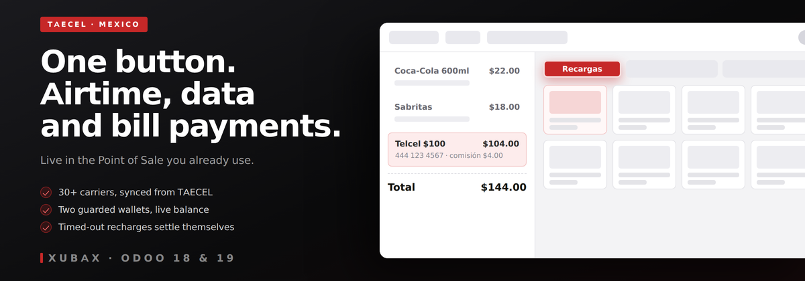
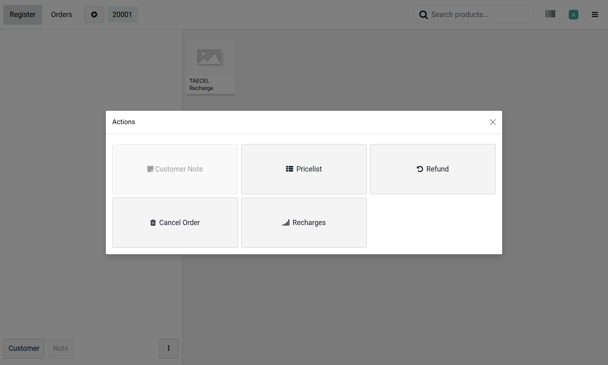
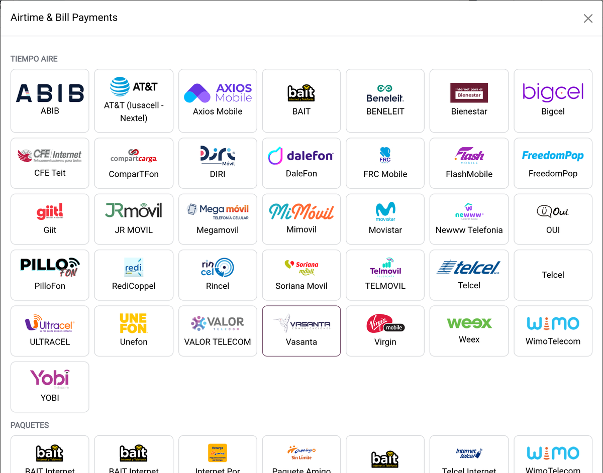
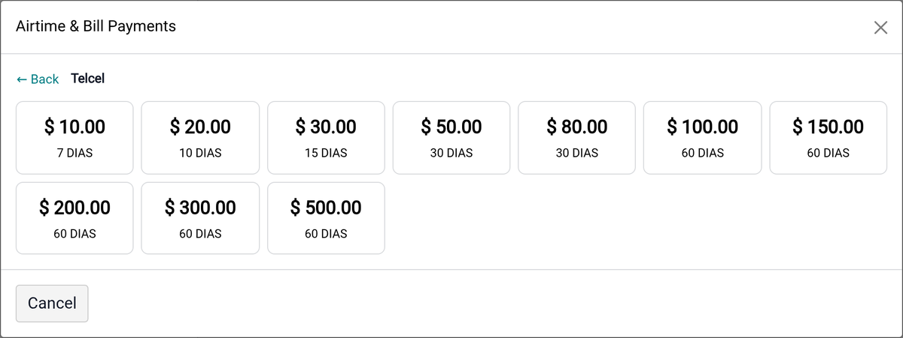
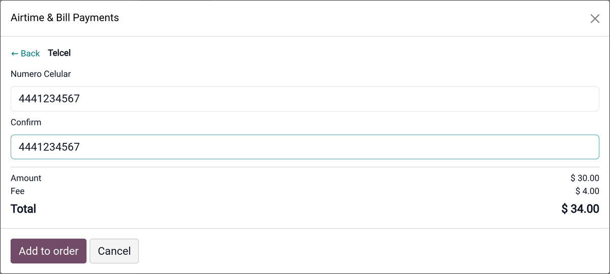
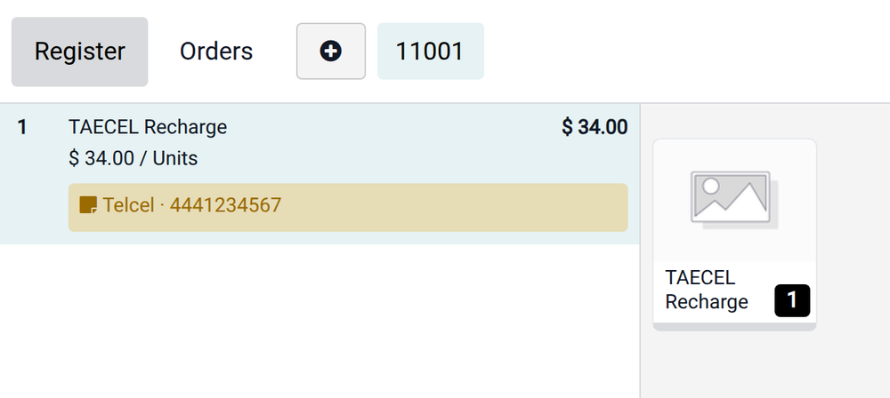
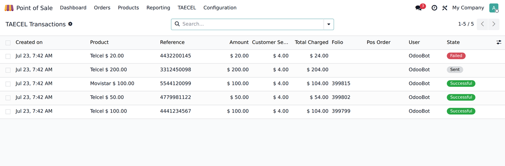
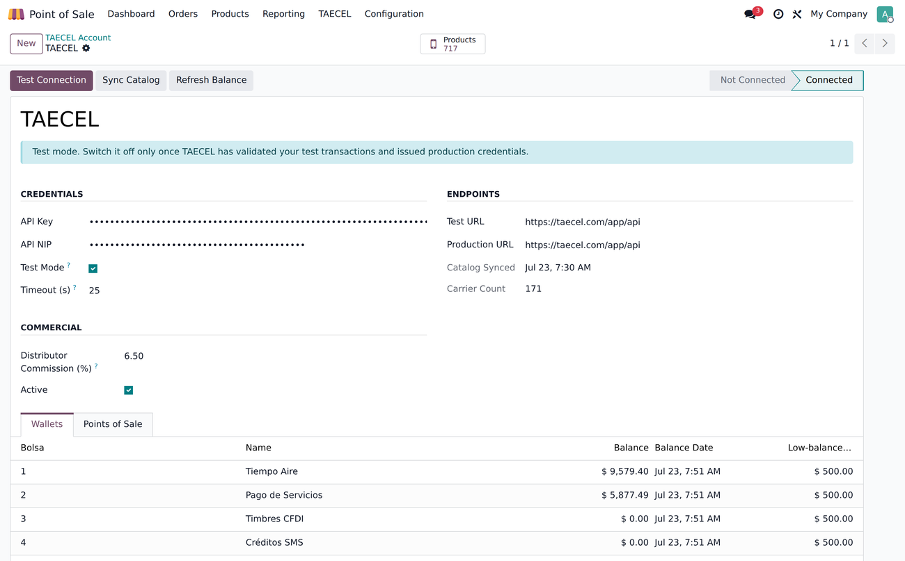

Sell mobile top-ups, data packages, bill payments and electronic PINs from the register you already use, through the TAECEL network (Mexico) — 30+ carriers, live balance and automatic settlement of interrupted sales.
A shop that sells airtime runs two businesses on one counter: the Point of Sale for its own products, and the provider’s web portal, in another tab, for every recharge. The recharge never reaches the ticket, the cash drawer never matches, and when a recharge hangs, nobody knows whether the customer was charged — so the cashier sends it again.
Nothing to learn: the cashier gets one more button, right where the register already keeps its actions — and it only shows up once a TAECEL account is connected:

That button opens the whole catalog, grouped as TAECEL publishes it — airtime, data packages, bill payments:

Fixed amounts come from the carrier itself, with the validity it publishes. Free-amount carriers (most utilities) ask for the amount instead:

The reference is validated before the sale, against the rules that carrier declares — its own label, minimum and maximum length, numeric or e-mail format, and a second field to confirm it. A recharge to a mistyped number cannot be undone, so it is caught here:

It lands as an ordinary order line — carrier and reference in plain sight for the cashier and on the printed receipt, next to the bread and the soda, in the same payment and the same cash count:

TAECEL states it plainly: a successful recharge is never reversed, and anything left “in progress” is charged to you. So this module never guesses.
Every request is kept against its POS order, with folio, authorization and the amount actually charged:

TAECEL funds airtime and bill payments as separate balances, and they are not transferable. Both are read live from TAECEL and tracked independently, and the cashier is warned before a sale that would overdraw one — instead of finding out when the recharge fails at the counter.
One account record holds the credentials, the commission and the Points of Sale allowed to sell. Test Connection, Sync Catalog and Refresh Balance are one click each; the catalog and the balances also refresh on a schedule.

Test mode points at TAECEL’s sandbox. Switch it off once TAECEL has validated your test transactions and issued production credentials.
https://taecel.com from the
Odoo server — not from the browser.